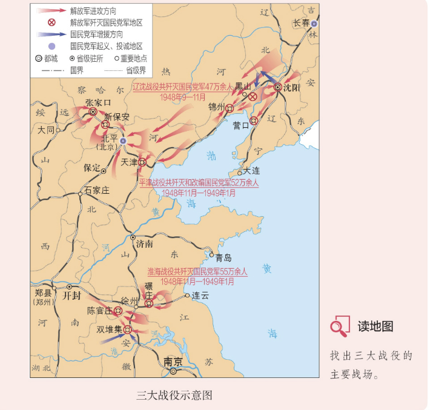

📌 解放区土地改革
⏳ 1947年 — 1948年
- 1947年 中共召开全国土地会议，颁布《中国土地法大纲》。
- 内容 没收地主土地，废除封建剥削土地制度，实行耕者有其田，按人口平均分配。
- 总路线 依靠贫雇农，团结中农，有步骤、有分别地消灭封建性剥削的土地制度，发展农业生产。
- 意义 农村阶级关系和土地占有状况发生根本性变化，翻身农民踊跃参军参战，为人民解放战争胜利提供重要保障。
🔑 核心认识：土地改革激发了农民革命和生产的积极性，为人民解放战争的胜利提供了重要人力、物力保障。
📌 中考常考：《中国土地法大纲》的内容、土地改革的意义。
🎮 挑战一：将人民解放战争胜利进程中的关键事件按时间排序
三大战役开始
千里跃进大别山
《中国土地法大纲》颁布
南京解放
七届二中全会召开
🎉 第①关通过！
🧠 核心概念翻转卡（点击翻面）
《中国土地法大纲》
1947年颁布，规定没收地主土地，废除封建剥削，实行耕者有其田，按人口平均分配土地。
耕者有其田
土地改革的核心目标，使无地或少地的农民获得土地，实现“耕者有其田”。
土地改革总路线
依靠贫雇农，团结中农，有步骤、有分别地消灭封建性剥削的土地制度，发展农业生产。
翻身农民
土地改革后获得土地的农民，踊跃参军参战，为人民解放战争胜利提供了人力物力保障。
🎉 第⑤关（翻转卡·子目一）通过！
📌 三大战役和南京解放
⏳ 1948年9月 — 1949年4月
- 1948.9-11 辽沈战役：林彪、罗荣桓指挥，解放东北全境。
- 1948.11-1949.1 淮海战役：刘伯承、陈毅、邓小平、粟裕等指挥，解放长江中下游以北广大地区。
- 1948.11-1949.1 平津战役：东北野战军与华北军区部队指挥，北平和平解放。
- 1949.4 百万雄师渡长江，解放南京，宣告国民党反动统治覆灭。
🔑 核心认识：三大战役基本消灭了国民党军队主力，大大加速了人民解放战争在全国的胜利。
📌 中考常考：三大战役的指挥者、意义，南京解放的时间。
🎮 挑战二：填写关键词，完成三大战役的关键信息
🎉 第②关通过！
🧠 核心概念翻转卡（点击翻面）
辽沈战役
1948年9-11月，林彪、罗荣桓指挥东北野战军，解放东北全境。
淮海战役
1948年11月-1949年1月，刘伯承、陈毅、邓小平等指挥，解放长江中下游以北地区。
平津战役
1948年11月-1949年1月，傅作义接受和平改编，北平和平解放。
南京解放
1949年4月，人民解放军百万雄师过大江，解放南京，宣告国民党反动统治覆灭。
🎉 第⑤关（翻转卡·子目二）通过！
📌 新民主主义革命的胜利
⏳ 1949年3月 — 1949年10月
- 1949.3 七届二中全会：在西柏坡召开，确定党的工作重心由乡村转向城市，提出“两个务必”。
- 进京赶考 毛泽东告诫全党“决不当李自成”，保持谦虚谨慎、艰苦奋斗的作风。
- 胜利原因 土地改革、人民军队英勇作战、正确战略决策、人民群众支持、国统区民主运动配合。
- 伟大意义 结束了半殖民地半封建社会历史，实现了民族独立和人民解放，为中华民族伟大复兴创造了根本社会条件。
🔑 核心认识：新民主主义革命的胜利是毛泽东思想的伟大胜利，深刻影响了世界历史发展进程。
📌 中考常考：七届二中全会、“两个务必”、新民主主义革命胜利的意义。
🎮 挑战三：将战役与指挥者配对
战役
辽沈战役
淮海战役
平津战役
千里跃进大别山
渡江战役
指挥者
林彪、罗荣桓
刘伯承、陈毅、邓小平等
聂荣臻等
刘伯承、邓小平
百万雄师
🎉 第③关通过！
🎮 挑战四：点击地图标注三大战役地点
💡 点击下方圆点标注三大战役地点（共3处）
辽沈战役
淮海战役
平津战役
🎉 第④关通过！
🧠 核心概念翻转卡（点击翻面）
七届二中全会
1949年3月在西柏坡召开，确定党的工作重心由乡村转向城市，提出“两个务必”。
两个务必
务必保持谦虚谨慎、不骄不躁的作风，务必保持艰苦奋斗的作风。
进京赶考
1949年3月中共中央离开西柏坡向北平进发，毛泽东说“进京赶考”，决不当李自成。
新民主主义革命胜利
结束半殖民地半封建社会，实现民族独立和人民解放，为中华民族伟大复兴创造根本社会条件。
🎉 第⑤关（翻转卡·子目三）通过！
"中国的土地制度极不合理。就一般情况来说，占乡村人口不到百分之十的地主富农，占有约百分之七十至八十的土地，残酷地剥削农民。而占乡村人口百分之九十以上的雇农、贫农、中农及其他人民，却总共只有约百分之二十至三十的土地，终年劳动，不得温饱。"
——《中国共产党中央委员会关于公布中国土地法大纲的决议》（1947年10月10日）
💭 自主思考：
- 材料反映了当时中国农村怎样的土地占有状况？
- 中国共产党为什么要实行土地改革？
📝 参考答案：① 材料反映当时中国农村土地占有极不合理：不到10%的地主富农占有70%-80%的土地，广大农民仅有20%-30%的土地；② 中国共产党实行土地改革是为了废除封建剥削制度，实现耕者有其田，调动农民积极性，为革命胜利提供人力物力保障。
抗战胜利后，国民党政府依靠美国发动内战，美国商品大量涌入中国市场，排挤国货。国民党官僚资本迅速膨胀，垄断经济，挤压民族资本主义企业。国民党政府还不断增加苛捐杂税、滥发纸币，导致恶性通货膨胀，民族资本主义陷入绝境，国统区人民在饥饿中挣扎。
💭 自主思考：
- 国统区经济崩溃的原因有哪些？
- 这对国民党统治产生了什么影响？
📝 要点归纳：国统区经济崩溃的原因：① 美国商品大量涌入，排挤国货；② 官僚资本膨胀，挤压民族企业；③ 苛捐杂税、滥发纸币导致恶性通货膨胀。这使国民党失去民心，加速了其统治的崩溃。
1948年5月，在解放河北隆化战斗中，共产党员董存瑞率全班连续炸掉4座炮楼、5座碉堡。部队发起冲锋时，突然遭到一座桥型暗堡中机枪火力的封锁，突击受阻。董存瑞冲到桥下，却发现这座暗堡无处放置炸药，但总攻时间已到，他毅然托起炸药包，抵住桥身炸毁暗堡，壮烈牺牲，以自己年轻的生命为部队开辟了前进道路。1950年9月，董存瑞被授予"全国战斗英雄"称号。
💭 自主思考：
- 董存瑞的事迹体现了怎样的精神？
- 为什么称他为"全国战斗英雄"？
📝 要点归纳：董存瑞在隆化战斗中舍身炸碉堡，以年轻生命为部队开辟前进道路，体现了共产党员不怕牺牲、英勇无畏的革命精神。他被授予"全国战斗英雄"称号，是千千万万人民解放军英雄的杰出代表。

找出三大战役的主要战场：
- 辽沈战役：东北地区（锦州、长春、沈阳）
- 淮海战役：以徐州为中心（江苏、安徽、河南交界地区）
- 平津战役：华北地区（张家口、天津、北平）
💭 自主思考：
- 三大战役的地理分布有何特点？
- 为什么说三大战役是战略决战的伟大胜利？
📝 要点归纳：三大战役分布在东北、华东、华北三大地区，形成了对国民党军队主力全面围歼的战略态势。三大战役的胜利基本消灭了国民党军队主力，使全国解放战争取得了决定性胜利。
"钟山风雨起苍黄，百万雄师过大江。
虎踞龙盘今胜昔，天翻地覆慨而慷。
宜将剩勇追穷寇，不可沽名学霸王。
天若有情天亦老，人间正道是沧桑。"
——毛泽东《七律·人民解放军占领南京》（1949年4月）
💭 自主思考：
- "百万雄师过大江"指的是什么历史事件？
- "宜将剩勇追穷寇，不可沽名学霸王"表达了怎样的战略思想？
📝 参考答案：① "百万雄师过大江"指1949年4月人民解放军百万雄师渡过长江、解放南京的历史事件；② "宜将剩勇追穷寇"表达了要将革命进行到底、彻底消灭残余敌人的战略思想，体现了毛泽东"将革命进行到底"的坚定决心。
全国解放前夕，国民党见大势已去，秘密从上海中央银行国库转移435万两黄金到台湾。又将大批文物和珍贵文献资料运往台湾，仅北平故宫文物就有2972箱，其中古物1434箱，图书1334箱，文献204箱，中央博物院文物852箱，还有近20万册善本古籍，40万件明清档案文献等珍贵历史资料。
💭 自主思考：
- 国民党转移黄金和文物说明了什么？
- 这对台湾和两岸关系有什么影响？
📝 要点归纳：国民党转移大量黄金和珍贵文物到台湾，说明其败退前已将台湾作为最后的据点。这些珍贵文物是中华民族的共同财富，也反映了两岸历史文化不可分割的联系。
💭 自主思考：
- 新民主主义革命经历了哪些重要阶段？
- 从五四运动到新中国成立，中国发生了怎样的变化？
📝 参考答案：新民主主义革命重要历史事件：① 五四运动（1919）——新民主主义革命开端；② 中共一大（1921）——中国共产党成立；③ 南昌起义（1927）——创建人民军队；④ 井冈山革命根据地开辟（1927）——农村包围城市道路；⑤ 长征和遵义会议（1934-1935）；⑥ 抗日战争（1931-1945）；⑦ 人民解放战争（1946-1949）；⑧ 新中国成立（1949）——新民主主义革命胜利。这些事件共同构成了中国共产党领导人民争取民族独立和人民解放的伟大历程。
1943年3月，国民党出版署名蒋介石的《中国之命运》一书，鼓吹没有国民党就没有中国。8月，《解放日报》发表《没有共产党，就没有中国》的社论，予以反击。受此启发，人民音乐家曹火星创作歌曲《没有共产党就没有中国》。这首歌随着抗日战争和解放战争节节胜利而唱响全中国，迎来新中国的诞生。1950年，毛泽东建议在歌曲名称上添加"新"字。这就是歌曲《没有共产党就没有新中国》的来历。
💭 自主思考：
- 这首歌的创作背景是什么？
- 毛泽东为什么建议在歌名中加上"新"字？
📝 要点归纳：《没有共产党就没有新中国》创作于1943年，是为反击国民党《中国之命运》一书而作。这首歌随着革命胜利而唱响全国。毛泽东建议加上"新"字，强调中国共产党领导的是"新"中国——一个独立、自由、民主、统一、富强的新中国，与旧中国有本质区别。
1. 《中国土地法大纲》颁布于：
📝 答案：C。1947年中国共产党召开全国土地会议，颁布《中国土地法大纲》。
2. 三大战役中，首先打响的是：
📝 答案：A。1948年9月辽沈战役首先打响，是三大战役的开始。
3. 北平和平解放是在：
📝 答案：C。1949年初，北平和平解放，傅作义接受和平改编。
4. 七届二中全会提出党的工作重心由乡村转向：
📝 答案：B。七届二中全会确定党的工作重心由乡村转向城市。
5. 三大战役共歼灭和改编国民党军队：
📝 答案：B。三大战役共歼灭和改编国民党军队150多万人。
材料题1 阅读材料，回答问题：
"中国的土地制度极不合理。就一般情况来说，占乡村人口不到百分之十的地主富农，占有约百分之七十至八十的土地，残酷地剥削农民。而占乡村人口百分之九十以上的雇农、贫农、中农及其他人民，却总共只有约百分之二十至三十的土地，终年劳动，不得温饱。"
——《中国共产党中央委员会关于公布中国土地法大纲的决议》（1947年10月10日）
（1）材料反映了当时中国农村怎样的状况？
📝 参考答案：材料反映了当时中国农村土地占有极不合理的状况：不到10%的地主富农占有70%-80%的土地，90%以上的农民仅有20%-30%的土地，终年劳动不得温饱。
（2）结合所学知识，分析解放区土地改革的历史意义。
📝 参考答案：① 废除封建剥削土地制度，实现了耕者有其田，解放了农村生产力；② 农村阶级关系发生根本变化，农民翻身做了主人；③ 翻身农民踊跃参军参战，为人民解放战争胜利提供了重要的人力物力保障；④ 赢得了广大农民的支持，是人民解放战争迅速胜利的重要保障。
材料题2 阅读材料，回答问题：
"钟山风雨起苍黄，百万雄师过大江。虎踞龙盘今胜昔，天翻地覆慨而慷。宜将剩勇追穷寇，不可沽名学霸王。天若有情天亦老，人间正道是沧桑。"
——毛泽东《七律·人民解放军占领南京》（1949年4月）
（1）"百万雄师过大江"指的是什么历史事件？这一事件的结果是什么？
📝 参考答案："百万雄师过大江"指的是1949年4月人民解放军百万雄师渡过长江、解放南京的历史事件。结果是宣告了国民党反动统治的覆灭。
（2）结合所学知识，分析人民解放战争迅速胜利的原因。
📝 参考答案：① 解放区土地改革赢得广大农民支持，翻身农民踊跃支前；② 中共中央正确的战略决策（千里跃进大别山、三大战役等）；③ 人民解放军将士英勇作战，不怕牺牲；④ 国统区反饥饿反内战民主运动的有力配合；⑤ 国民党统治腐败，失去民心。
📊 知识结构 · 人民解放战争的胜利
💡
知识结构图已生成。点击下方
各节点
查看详细解析与考点说明
▶ 点击展开
🌾土地改革
1947 《中国土地法大纲》→ 耕者有其田 → 翻身农民
考点：《中国土地法大纲》的内容、土地改革的意义、农民支前。
⬇️
▶ 点击展开
⚔️三大战役
辽沈战役 → 淮海战役 → 平津战役 → 歼灭150多万
考点：三大战役的时间、指挥者、意义、北平和平解放。
⬇️
▶ 点击展开
🌊南京解放
1949.4 百万雄师过大江 → 国民党反动统治覆灭
⬇️
▶ 点击展开
⭐胜利意义
七届二中全会 → 新民主主义革命胜利 → 民族复兴
考点：七届二中全会、“两个务必”、新民主主义革命胜利的伟大意义。
🟢 土地改革：赢得民心
🔴 三大战役：消灭主力
🟠 渡江战役：推翻统治
🔵 胜利意义：民族复兴